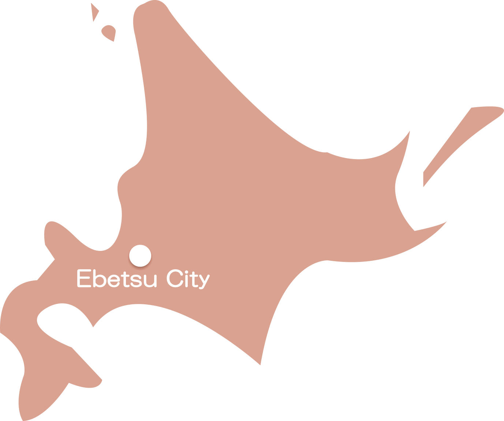
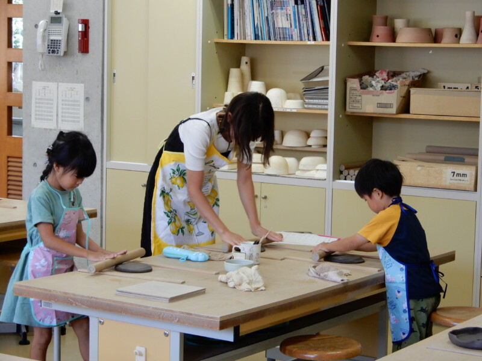
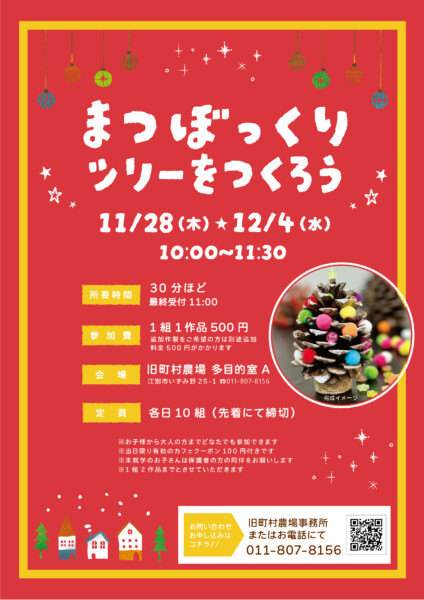

江別について
江別市は札幌に隣接する人口約12万人のまち。
北海道で7番目の人口規模で、快適で便利なまちと緑あふれる自然環境の両方を備えています。
学校や施設なども多く、買い物もしやすいため、生活も便利です。
空・海の玄関口である新千歳空港や石狩湾新港にも近く、立地にも恵まれており、交通面でも快適に過ごせます。

親子向けイベント情報
2024/12/8
親子で板作りのお皿を作ろう！

2024/11/30～2024/12/01
冬の親子陶芸体験～丸皿を作ろう！～
2024/11/28・2024/12/4
まつぼっくりのツリーをつくろう

フォトギャラリー


児童扶養手当について（※重要点）
【記載内容】
１．受給者となる方
２．支給要件の児童（年齢が18歳に達する日以後の最初の3月31日までの間にある児童）
３．手当額（月額）
４．支給時期
５．児童扶養手当を受給するための手続きについて
６．電子申請について
７．手続きに必要なもの(ぴったりサービス)
８．ぴったりサービスを利用できる手続き
９．手続きに必要なもの
１０．手続きの流れ
移住したママさん・パパさんの声

江別なら何でも揃います！

オーガニック食品を
江別市に広げたい

子供も私も支えてくれる町